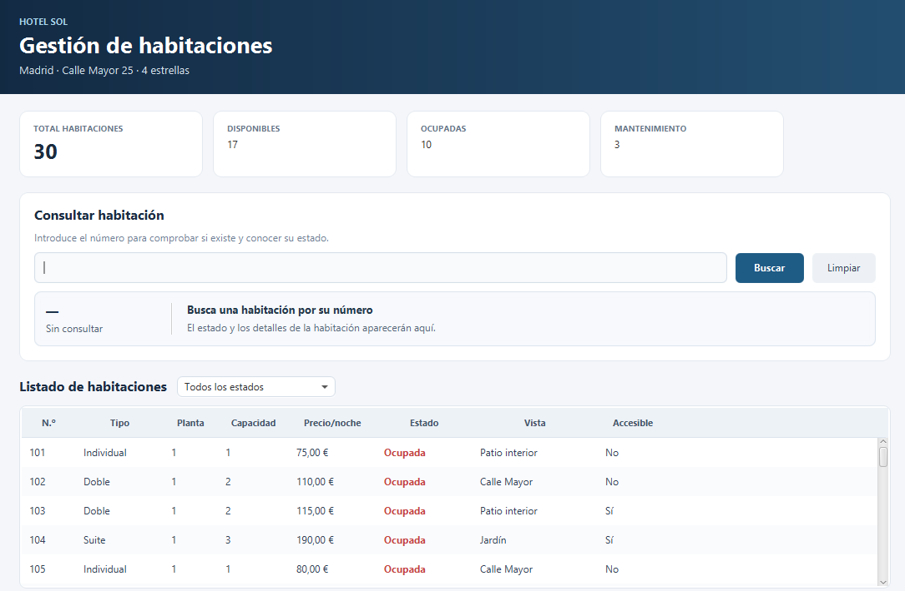
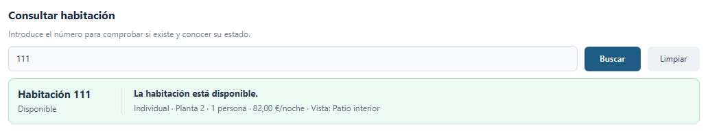
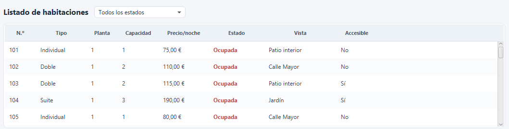
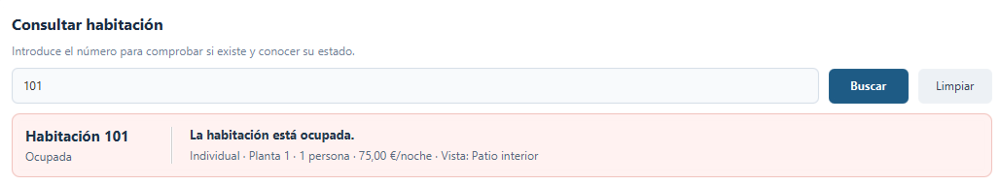
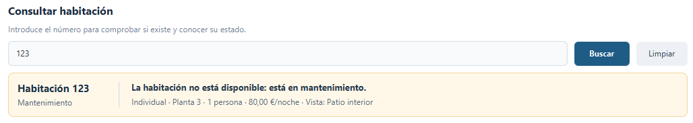
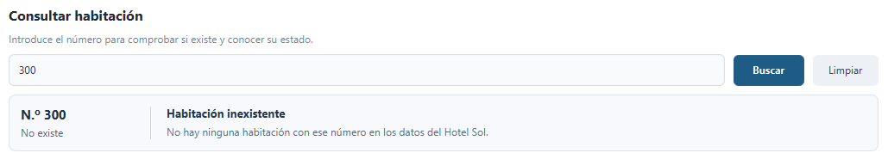

Consulta directa
Encuentra una habitación concreta por su número.
PROYECTO DE DESARROLLO DE APLICACIONES
Hotel Sol es una aplicación de escritorio que permite consultar el estado de las habitaciones de un hotel, buscar por número y filtrar la información desde una única interfaz.
Madrid · Calle Mayor 25
QUÉ ES HOTEL SOL
Hotel Sol centraliza la información de las habitaciones para que consultar su disponibilidad sea rápido y sencillo.
La aplicación carga los datos desde un archivo XML y los muestra en una tabla con los detalles más importantes: número, tipo, planta, capacidad, precio por noche, estado, vistas y accesibilidad. No necesita una base de datos externa.
Encuentra una habitación concreta por su número.
La tabla reúne la información importante en un mismo lugar.
Los datos se cargan desde un archivo XML incluido en el proyecto.
LO QUE PUEDES HACER
Herramientas concretas para revisar el estado del hotel sin perder tiempo navegando por distintas pantallas.
Introduce el número de habitación y recibe una respuesta clara sobre su existencia y estado.
Reduce el listado por número o estado para localizar los datos que necesitas.
Distingue habitaciones disponibles, ocupadas o en mantenimiento mediante indicadores visuales.
La información se lee desde un fichero XML integrado, sin configurar un servidor de base de datos.
EN POCOS PASOS
El flujo de uso es sencillo: ejecutar, localizar y consultar.
$ mvn clean javafx:run
› Iniciando Hotel Sol...
› Cargando datos XML...
✓ Aplicación listaImporta la carpeta como proyecto Maven en tu IDE o abre una terminal en la carpeta que contiene pom.xml.
Con JDK 21 y Maven instalados, ejecuta mvn clean javafx:run.
Escribe un número, consulta su estado y revisa los detalles que aparecen en pantalla.
Usa los filtros de estado o número para acotar la tabla y encontrar habitaciones más rápido.
UNA MIRADA AL INTERIOR
Capturas reales de Hotel Sol: consulta de habitaciones, listado general y respuestas según el estado de cada habitación.






Las imágenes muestran la interfaz de Hotel Sol y sus respuestas para distintos estados de habitación.
BAJO EL CAPÓ
El proyecto separa la interfaz, la lógica de consulta y la lectura de los datos para mantener el código organizado.